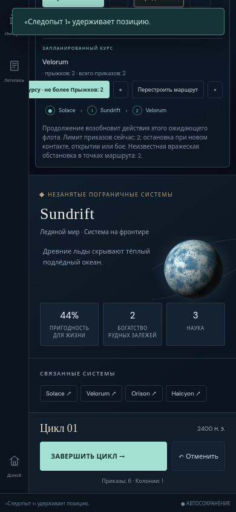
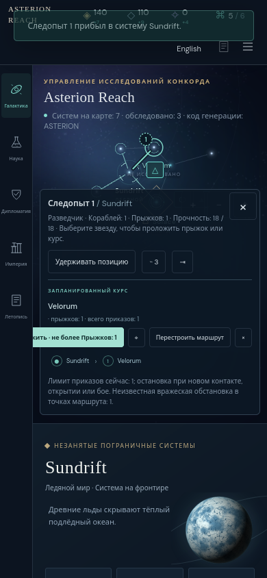

Focused follow-up · Firefox 146.0.1 · 390 × 844 Russian touch viewport
Frozen source 14b36d1a14c54264ac8e9b37aec2260ccbb461cb at http://127.0.0.1:33231 correctly renders the one-order and two-order budgets, the uncertainty sentence, and the held fleet suffix. The same ordinary Solace → Sundrift → Velorum route was plotted and held, moved one jump, and undone. No campaign fixture was edited.
hasTouch: true, without isMobile emulation.Result · Source/build pins and unchanged mechanics hashes · Actual actions and equality checks · Focused reproduction driver · Manifest


The initial 48-file Firefox manifest remains unchanged. This follow-up does not replace that original evidence. game.js, turn-history.js, main.js, undo.css, and mobile-inspection.css hash identically between the two reviewed source commits.
The first recheck incorrectly expected the precise phrase «1 приказ». The product instead used the valid label «Лимит приказов сейчас: 1». That driver assertion failure, its script, observations, and screenshot are retained in first-attempt. After correcting only this assertion, all focused checks passed.
A separate visual finding concerns the Russian Continue button clipping under the rail; it is documented in the action-row finding. Passing the wording checks does not claim that row’s geometry was correct on this build.